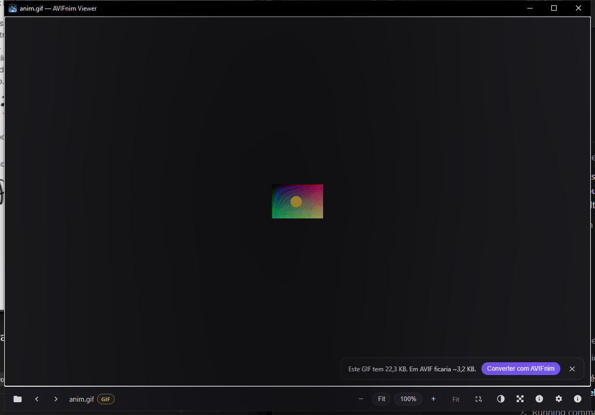

AVIF animado de verdade
Usa o webview do sistema para animar AVIF, WebP e GIF, com loop conforme o arquivo.
O visualizador nativo do Windows mostra só o primeiro frame do AVIF animado. O AVIFnim Viewer toca em loop, navega pela pasta e também abre PPM/PNM. Grátis e open source.
Windows 10/11 x64 e Linux x64 (`.deb`) — v0.1.0 disponível · macOS em validação no CI · MIT · sem telemetria · associações de arquivo opcionais

Usa o webview do sistema para animar AVIF, WebP e GIF, com loop conforme o arquivo.
Decodifica P1–P6 (8/16-bit) em Rust, para inspecionar frames do Blender/Nuke.
Prefetch bidirecional dos arquivos vizinhos, com teto de memória configurável.
Abra um frame e o viewer detecta a sequência PNG/JPG e toca em loop.
Tauri 2 + Rust, sem telemetria, sem contas e sem sequestrar seus formatos.
Quer converter sequências e vídeo para AVIF animado? Conheça o AVIFnim.
O AVIFnim é o conversor que cria AVIF animado a partir de sequências, vídeo e gravação de tela.
Não. Ele só visualiza. Conversão é o trabalho do AVIFnim pago.
Não para o viewer: ele usa o WebView2, que já decodifica AVIF no Windows atualizado.
Não. As associações são opcionais e desmarcadas por padrão.
Sim, MIT. O código está no GitHub.